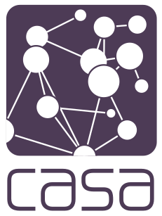

Jon Reades & Ollie Ballinger - j.reades@ucl.ac.uk
5th November 2026
Who decides what counts as an error?
We’ll answer it with code and readings.
“Data do not need cleaning until there are strangers in the dataset.” ~ D’Ignazio and Klein (2020, 133)
Pairs. No laptops. Vote with your fingers.
How many of p1, p2 and p3 now have a 'Crusty' base?
Answer: 3 (two of the three): p1 and p3. p2 set its own base, so the class change doesn’t reach it.
Which line is actually wrong?
total = 0print("About to start loop"for i in range(1,10):print(total)Answer: 2. The missing ) is on the line before the one Python complains about, in older versions.
What does this print?
You can't divide by zero! then Division is fun!Something has gone very wrong. then Division is fun!ZeroDivisionError tracebackYou can't divide by zero!Answer: 1. The named except catches it, the generic one is skipped, and finally always runs.
Exception: Please don't do that again!Division is fun! is never printedAnswer: 2. finally still runs, and the traceback shows both errors (“During handling of the above exception, another exception occurred”).
According to the reading you did, the person who decides is…
But what might be lost in the process of dominating and disciplining data? Whose perspectives might be lost in that process? And, conversely, whose perspectives might be additionally imposed? ~ D’Ignazio and Klein (2020, 131)
Likewise, data do not need cleaning until there are strangers in the dataset. ~ D’Ignazio and Klein (2020, 133)
Does one choose cleaner data at a larger scale that is relatively easy and quick to purchase? Or more accurate data at a local scale for which one has to engage and build trust with community groups? ~ D’Ignazio and Klein (2020, 135)
The concepts of location, event, neighbourhood, field, object and network (Figure 1a) are a succinct list of spatial concepts used as the basis for six laboratory exercises […] ~ Etherington (2016, 118)
Unwin (1980) argued for open-ended laboratories, as highly structured laboratories do not teach research skills and result in students producing nearly identical work. ~ Etherington (2016, 123)
Someone chose these categories. Who? And for what?
Choose your side. You are…
Alone, 1 minute: redraw the top two levels of the tree according to your interests. Where do the e-bike, unicycle and rickshaw go?
With neighbours, 3 minutes: agree one attribute that every Vehicle must have, and one value you would refuse (raise an error).
Ask pairs, one side at a time: What did you two decide? Where did the e-bike go, and what would you refuse?
For a maker, a 500 W motor is a product. For a regulator, it is an error. Same input, different answer.
But what might be lost in the process of dominating and disciplining data? ~ D’Ignazio and Klein (2020, 131)
[…] including deliberate mistakes that need to be corrected […] ~ Etherington (2016, 123)
Listen for: in today’s practical, where does Python throw an error on purpose?
The sign-up form closed on Tuesday 3 November.
Here’s what we’re covering:
There is a second section that is about making use of classes and inheritance. This will help you a lot when you get to understanding how Pandas and Geopandas work and it’s the core power of Python, but do not panic if you run out of time to get to this. You will also pick it up through using Python. That’s not an excuse to not engage with the ideas, it’s an excuse for not spending nine hours on this practical.
You will see: - Custom exceptions - Abstract base classes - Inheritance - Class and instance variables - A tiny bit of polymorphism.
Damage detection in Gaza from satellite imagery
Listen for: how does Ollie check what the satellite shows? And who decides what counts as “damaged”?
Complete the sentence:
A view from a distance can / can’t be trusted when…, because…
A selection will open next week’s session.
Provide your input here: form.menti.com/s/altu662n9tu3
